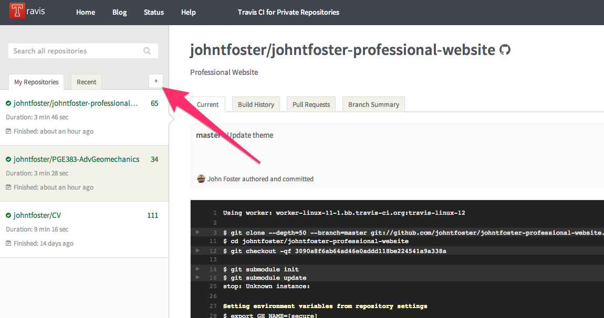
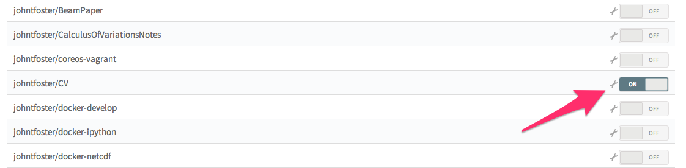
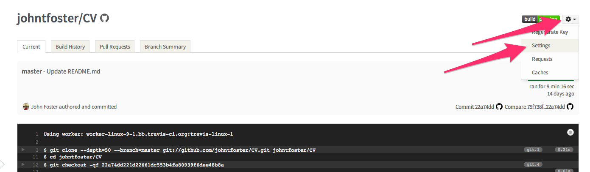
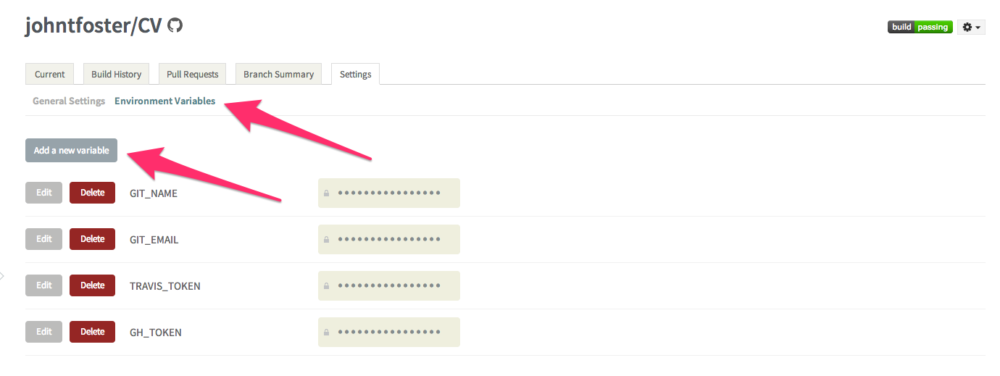
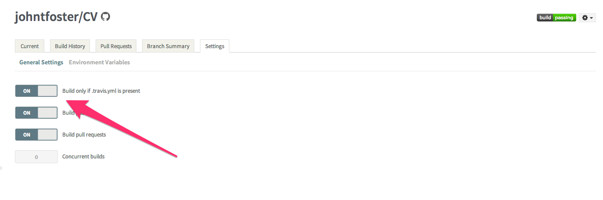
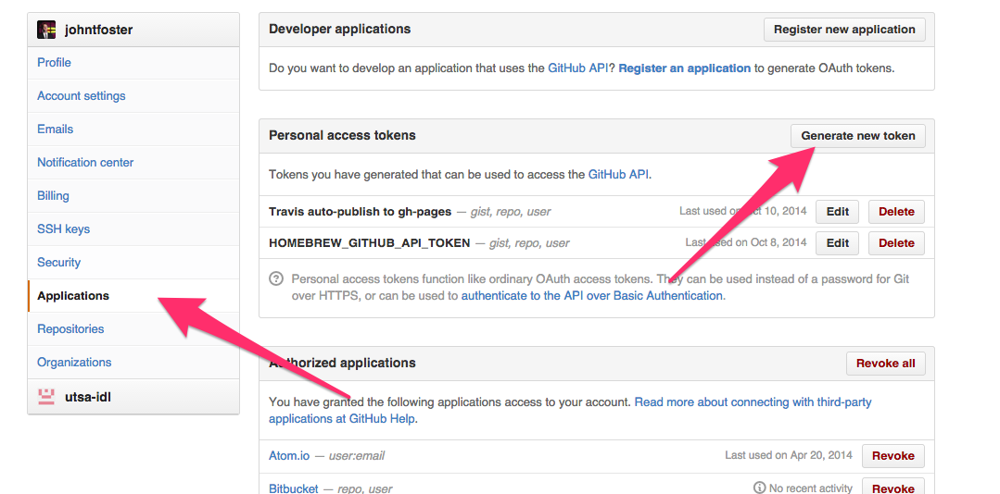

Run Peridigm (and other scientific HPC codes) without building via Docker
UPDATE 6/1/2022: This post has been edited replacing the original docker
image location at johntfoster/peridigm with the current location at
peridigm/peridigm. Additionally, the discussion related to parallel
computing can now be accomplished much easier by using docker-compose. See the Running Simulations with Peridigm Docker Image section of the Peridigm repository for more details.
If your a software engineer working in web development or cloud software deployment, you would have had to have your head in the sand for the last two years to have not heard of Docker by now. Briefly, Docker is a light-weight application container deployment service (think super low-overhead virtual machine, usually meant to contain one application and its dependencies), based on Linux containers. While there are 100s of articles describing Docker, its uses, many services, and even companies springing up around it; my colleagues in the scientific computing/high-performance computing (HPC) world are either not aware of Docker or don't see the utility, because it's hard to find significant information for or uses of Docker in this field. This post will hopefully demonstrate some of the utility of the service and promote its use in HPC and in academic settings. Additionally, as a contributor to the open-source software Peridigm, my hope it that the path demonstrated here might lower the courage required to try out the software and promote new users.
To provide some background/context for my own interest in Docker, in my current role as an academic advisor to graduate students and in my previous career as a researcher at Sandia National Laboratories I have often been a user and/or developer of scientific software that has a fairly complex dependent application stack. To use Peridigm, a massively parallel computational peridynamic mechanics simulation code, as an example, we have a large dependency on Trilinos. The packages we use from Trilinos have additional dependencies on a message passing interface (MPI) implementation (e.g. OpenMPI), Boost, and NetCDF. NetCDF has a dependency on HDF5, HDF5 on zlib, etc. All of these need a C/C++ compiler for building, of course, and if we are using the Intel compilers we might as well go ahead and use MKL libraries for efficiency. Trilinos uses CMake as a build system, so we need that around as well, at least during the build process. I'm sure there are others I am not thinking of at this moment. Figuring out and understanding these dependencies and learning to debug build issues can take a really long time for a budding computational scientist to master. Problems can be really compounded in a large multi-user HPC cluster where many different versions of compilers and libraries are present. Using UNIX modules goes a long way towards keeping things straight, but problems still arise that can be time consuming to troubleshoot. I usually have new graduate students go through the process of building Peridigm and all the dependencies for their own learning experience when they first join my group, in every case they struggle considerably the first few times the have to build the entire suite of software on a new machine. In some cases, particularly with MS level students, it can be a serious impediment to progress, as they are very short time lines to make meaningful research progress, and oftentimes they are only going to be end-users of the code, not developers. Almost certainly they are not going to make changes to any of the packages in Trilinos or any of the other dependencies outside of Peridigm. Enter Docker.
Docker allows for the ability to run applications in prebuilt containers on any Linux machine with Docker installed (or even Mac OS X and Windows via Boot2Docker). If your Linux distribution doesn't already have it installed, just use your package manager (e.g. apt-get install docker on Debian/Ubuntu based machines and yum install docker on Fedora/Redhat based machines). Docker is so ubiquitous at this point there are even entire Linux distributions like CoreOS being built specifically to maximize its strengths. Additionally, there is the Docker Hub Registry which provides Github like push/pull operations and cloud storage of prebuilt images. Of course, you or your organization can host your own Docker image registry as well (note: think of a Docker image like a C++ class, and a Docker container as a C++ object, or an instance of the image that runs). You can derive images from one another and this is what I have done in setting up an image of Peridigm. First, I have an image that starts with a baseline Debian based Linux and installs NetCDF and its dependencies. I have two tagged versions, a standard NetCDF build and a largefiles patched version which makes the large file modifications as suggested in the Peridigm build documentation. The NetCDF largefile image can be pulled to a Docker users local machine from my public Docker Hub Registry with
docker pull johntfoster/netcdf:largefiles
the NetCDF image is built automatically via continuous integration with a Github repository that contains a Dockerfile with instructions for the image build process. I then derive a Trilinos image from the NetCDF largefiles image. This image contains only the Trilinos packages enabled such that Peridigm can be built. The Trilinos image can be pulled to a local machine with
docker pull johntfoster/trilinos
this Trilinos image could be used to derive other images for other Trilinos based application codes which utilize the same dependent packages as Peridigm. The cmake build script which shows the active Trilinos packages in this image can be viewed here. This image is also built via continuous integration with this Github repository which can easily be modified to include more Trilinos packages. Finally, the Peridigm image can be pulled to a local machine with
docker pull peridigm/peridigm
this image is built from the Dockerfile found here, however it must be modified slightly to work with a local Peridigm source distribution if you want to build your own image because I do not want to distribute the Peridigm software source code as that is done by Sandia National Laboratories (see here if interested in getting the source). To run Peridigm you simply have to run the command:
docker run --name peridigm0 -d -v `pwd`:/output peridigm/peridigm \ Peridigm fragmenting_cylinder.peridigm
Even if you have not pulled the images locally from the Docker Hub Registry, this command will initiate the download process and run the command after downloading. Because the image contains all the necessary dependencies, it is around 2GB in size; therefore, it takes a while to download on the first execution. I have not made any attempts to optimize the image size, but it's likely it could be made smaller to speed this process up. Once you have the image locally, launching a container to run a simulation takes only milliseconds. The --name option gives the container the name peridigm0, this could be any name you choose and naming the container is not required, but makes for an easy way to stop the execution if you wish. If you need to stop the execution, simply run docker stop peridigm0. The -d option "detaches" the terminal so that the process runs in the background, you can reattach if needed with docker attach peridigm0. The -v option is critical for retrieving the data generated by the simulation. Docker handles data a little strangely, so you have to mount a local volume, in this case the current working directory returned by pwd, but in general it could any /path/to/data/storage. The local path is mounted to the volume /output that has been created in the Peridigm Docker image. You must place your input file, in this case fragmenting_cylinder.peridigm from the examples distributed with Peridigm, in your local shared mount for the Peridigm executable located in the Docker image to access it. As the simulation runs, you will see an output file fragmenting_cylinder.e appear in the shared mount. The other two arguments, peridigm/peridigm and Peridigm are the image name in the Docker Hub Registry and the executable, respectively.
To quickly recap, if all you want to test out Peridigm quickly, follow these 3 steps:
-
Install Docker via your package manager on Linux or utilize Boot2Docker on Mac OS X and Windows.
-
Place a Peridigm input file such as
fragmenting_cylinder.perdigmin a directory. -
Run the
docker run ...command above replacingpwdwith the directory name where you placed the file in 2., if not running from the current working directory.
That's it. No compiling, no dependencies. Most of the performance studies I've seen report a very small, 1-2% hit from the Dockerized version of an application over a natively installed application stack.
Of course, Peridigm is meant to be run in a massively parallel setting. A Docker container can take advantage of some multithreading, therefore you can also just run an MPI job right inside a Docker container, for Peridigm we can simply run
docker run --name peridigm0 -d -v `pwd`:/output peridigm/peridigm \ mpiexec -np 2 Peridigm fragmenting_cylinder.peridigm
for a possibly small performance gain. If you run this command, you should now see the domain decomposed output files, e.g. fragmenting_cylinder.e.0 and fragmenting_cylinder.e.1 appear in your mounted directory. However, this alone will not give you the true gains you expect form multicore CPUs or close to what you would see in a massively parallel HPC cluster. We can spawn a virtual cluster of Docker containers, from the peridigm/peridigm image and use MPI to communicate between them. To do this, we launch our virtual cluster with docker run ... but this time without any execution command. The default is for these containers to be ssh servers, so they will sit there idle until we need them for an MPI task. For example, if we want a 2 node job, we can run
docker run --name peridigm0 -d -P -h node0 -v `pwd`:/output peridigm/peridigm docker run --name peridigm1 -d -P -h node1 -v `pwd`:/output peridigm/peridigm
this launches containers named peridigm0 and peridigm1 that will have local (to their containers) machine names node0 and node1. Now we can find the containers IP addresses with the following command
docker inspect -f "{{ .NetworkSettings.IPAddress }}" peridigm0 docker inspect -f "{{ .NetworkSettings.IPAddress }}" peridigm1
These commands will return the ip addresses, just for demonstration purposes, let's assume that they are 10.1.0.124 and 10.1.0.125 respectively. Now we can launch mpiexec to run Peridigm on our virtual cluster. This time the containers are already running, so all we have to is run
docker exec peridigm0 mpiexec -np 2 -host 10.1.0.124,10.1.0.125 \ Peridigm fragmenting_cylinder.peridigm
which executes mpiexec on the container named peridigm0 and passes a host list to make MPI aware of where the nodes waiting for tasks are. You can have fine grained control over mpirun as well, for example if you wanted to run 2 MPI tasks per Docker container, you could do something like
docker exec peridigm0 mpiexec -np 4 -num-proc 2 -host 10.1.0.124,10.1.0.125 \ Peridigm fragmenting_cylinder.peridigm
when your finished you can stop and remove the containers with
docker stop peridigm0 peridigm1 docker rm -v peridigm0 peridigm1
the -v option to docker rm ensures that the mounted volumes are removed as well and there not any orphaned file system volume shares. I have written a Python script (shown below) that automates the whole process for an arbitrary number of Docker containers in a virtual cluster.
You can utilize this script to run Peridigm simulations on a virtual Docker cluster with the following command:
./pdrun --np 4 fragmenting_cylinder.peridigm --path=`pwd`
please consult the documentation of the script for more info about the options using ./pdrun -h. There are really only a few detials in between what I've done here and being able to deploy this on a production HPC cluster. The main difference would be that you would use a resource manager, e.g. SLURM to schedule running the Docker containers. You would also want to have both your mounted volume and a copy of the Docker image on a shared filesystem across all nodes of the cluster. Did I mention you can deploy your own private registry server?
The last point I would like to make about Docker is that, while I demonstrated that end users can benefit by eliminating the entire build process and move right to running the simulation code, also developers could greatly benefit from using a common development image and requiring only support for the Docker image, as it can be quickly deployed and tested against all platforms. How many times have your heard, even from experienced developers, after a commit fails in continuous integration, "It worked on my machine...". Docker offers a solution to those problems and many others.
A LaTeX Beamer template/theme for the Cockrell School of Engineering
This post is mainly aimed at my colleagues (and students) in the Cockrell School of Engineering at The University of Texas at Austin. As you may have gathered from other posts on this blog, I am a huge fan of LaTeX for typesetting documents. Recently, I had to give a talk within the Department and was asked polietly by our Communications Coordinator to use a provided MS PowerPoint template that conforms to the Visual Style Guide of the Cockrell School of Engineering.
I have many reasons for disliking PowerPoint that I will not go into here, but I have avoided using it at all costs for several years now, and did not want to start now. I also have an appreciation for branding and respect the desire to project a uniform brand from the Departments/School. My solution was to create my own LaTeX Beamer presentation style that replicates the Cockrell School PowerPoint as close as possible. I hacked it together relatively quickly for my talk which I delivered last week, but decided over the weekend to put together something a little more robust to share with my colleagues in the Cockrell School. The style file accepts arguments to input different department names and has some nice features for using BibTeX citations within the presentation.
The repository can be found cloned with git with the following command:
git clone git@github.com:johntfoster/cockrell-school-latex-beamer-template
it can also be found on GitHub. Feel free to fork it and extend it as you see fit. If you find any errors or add useful extensions, please send pull-requests.
You can also download a zip archive of the files : cockrell-school-latex-beamer-template-master.zip
An example of the PDF output results are shown below:

Prevent TeXShop from stealing focus from an external editor
I use Vim as my editor of choice for nearly all text editing activities including writing LaTeX documents. My usual workflow is to use a split window setup with tmux and run latexmk -pvc on my LaTeX file in one split-pane while editing the source file in the other split-pane. If your not familiar with latexmk it is a Perl script that, in a smart way, using minimal number of compile runs, keeps your LaTeX document output up-to-date with the correct cross-references, citations, etc. The -pvc option keeps it running in the background and recompiles with a detected change in any of the project files. I then use TeXShop as a PDF viewer because it has the nice ability to detect changes to the PDF output and autoupdate. Mac OS X's built-in Preview will do this as well, but you must click the window to enable the refresh. However, by default, TeXShop will steal focus from the editor window. This is annoying causing me to click or Command-Tab back to the Terminal to continue typing. I found a fix in a comment on Stack Exchange. If you type
defaults write TeXShop BringPdfFrontOnAutomaticUpdate NO
in the Terminal window this will disable the focus-stealing behavior and leave the window in the background so that it doesn't disrupt continuous editing.
Using Exodus.py to extract data from FEA database
This post will briefly show how you can use the exodus.py script distributed with Trilinos to extract data directly from an Exodus database. Exodus is a wrapper API on NetCDF that is specifically suited for finite element data. That is, it defines variables on nodes, elements, blocks of elements, sets of nodes, etc. The Exodus API is provided in both C and Fortran, exodus.py uses ctypes to call into the compiled Exodus C library.
First, I need to rearrange my install environment a little because exodus.py expects the NetCDF and Exodus compiled dynamic libraries to be in the same directory. On my machine they are not, so I will just create some symbolic links. It also expects the Exodus include file to be in a folder labeled inc, but on my machine it is labeled include so again, I will just create some symbolic links.
%%bash
ln -sf /usr/local/netcdf/lib/libnetcdf.dylib /usr/local/trilinos/lib/.
ln -sf /usr/local/trilinos/include /usr/local/trilinos/inc
If your /usr/local is not writable, you may need to use sudo to create the links. Also, I am on Mac OSX where dynamic libraries have a .dylib file extension. If you use Linux, you will need to change .dylib above to .so.
We also need to add the path of exodus.py to the active PYTHONPATH. We can do this from within the IPython session.
import sys
sys.path.append('/usr/local/trilinos/bin')
Now we can load the exodus class from exodus.py and instantiate a file object with a given filename. I will use the ViscoplasticNeedlemanFullyPrescribedTension_NoFlaw.h Exodus history database that is output from the Peridigm verification test of the same name.
from exodus import exodus
e = exodus('ViscoplasticNeedlemanFullyPrescribedTension_NoFlaw.h', mode='r', array_type='numpy')
Now we'll use the API calls to extract the data. First we'll get the time step values.
time_steps = e.get_times()
Now we can print the global variable names.
e.get_global_variable_names()
And use the global variable names to extract the data from the database. Since we used array_type='numpy' when we instantiated the file object above. The data is stored in numpy arrays.
vm_max = e.get_global_variable_values('Max_Von_Mises_Stress')
vm_min = e.get_global_variable_values('Min_Von_Mises_Stress')
Because in this example test we load at a constant strain-rate, we can easily convert the time-steps to engineering strain.
eng_strain_Y = time_steps * 0.001 / 1.0e-8
Now we can create a stress-strain curve
%matplotlib inline
import matplotlib.pyplot as plt
plt.plot(eng_strain_Y, vm_max, eng_strain_Y, vm_min);
plt.ylabel("Max/Min von Mises Stress");
![](data:image/png;base64,iVBORw0KGgoAAAANSUhEUgAAAX8AAAEGCAYAAACNaZVuAAAABHNCSVQICAgIfAhkiAAAAAlwSFlz%0AAAALEgAACxIB0t1+/AAAIABJREFUeJzt3XmcXHWZ7/HP01XV1Xu2zk4gCRA2WYIKKKBpUASEMHec%0AGUVmVOTOeK86wOhFB1nSgIMj4qCM48y9gyIioA7iKALKlijKJphAgIBEMWTrrJ30VtW19HP/qIp2%0AQtJ9urvOqUrX9/161aurTp1zfs8v3Xn617/zq/OYuyMiItWlptwBiIhI9JT8RUSqkJK/iEgVUvIX%0AEalCSv4iIlVIyV9EpAqVNfmb2TfNbJOZrQyw7yFm9piZLTez58zsrChiFBEZj8o98r8VODPgvlcC%0A33H3hcAHgK+HFpWIyDhX1uTv7o8BnYO3mdnBZvaAmT1jZr8ws8OKb20EJhSfTwTWRxiqiMi4YuX+%0AhK+ZzQXudfeji68fAT7m7qvN7ETgenc/3cxagCeAFqARON3dl5cpbBGR/Vq83AEMZmZNwNuA/zKz%0AXZtri1//BbjF3W8ys5OA7wBHRR+liMj+r6KSP4VpqB3Fef09vR1YAuDuT5pZnZm1uvvWSCMUERkH%0AQp3zN7PLzexFM1tpZneaWXKo/d29C3jNzP6ieLyZ2THFt18G3lXcfgRQp8QvIjI6oSX/4lz+3wLH%0AF+fzYxRW6Qze5y7gceAwM1trZhcCFwAXmdkK4AVgcXH3y4ALi9vvBD4cVuwiIuNdmNM+XUAWaDCz%0APNDAHit03P38fRz7hjX87v47YFGJYxQRqUqhjfzdfTvwZeB1YAOFufyHw2pPRESCC3Pa52DgUmAu%0AMAtoMrMLwmpPRESCC3Pa5y3A4+6+DcDM7qGwYueOXTuYmcqIiYiMgrvb8HvtW5jJ/2XgKjOrB9IU%0AVuo8vedOY+1AJTOzdndvL3ccYVH/9m/juX/juW9QmoFzmHP+zwHfBp4Bni9u/n9htSciIsGF+iEv%0Ad78BuCHMNkREZOTKfVfP8W5ZuQMI2bJyBxCyZeUOIGTLyh1AiJaVO4BKV9Ybu5mZj+c5fxGRMJQi%0Ad2rkLyJShZT8RUSqkJK/iEgVUvIXEalCSv4iIlVIyV9EpApVWiUvEREArG1Jgpr8LCw3k5rcNGpy%0AU6nJtRLLTaYmO4VYdgKxTAs1mWbimSZimQZimTpi6STxTIJXFk/ype26f9g+KPmLSMlYW7thAxOp%0AyR1ATfYAanIziWVmEMtOoyY7kVh2IrFMC7FMM7FMI7H+BuLpeuLpJIlULfFUnNreGLU9NbwjA5km%0AyDTkyTbkyTVkyNZnyCXT5OtS5JK95Gt7yCe7yDatJ5/YyUB8BwPxTgbi28v9b1Hp9CEvEfkja2uP%0AYblZxHJzqMnOpCY7k1h2BrFsK7HMFGL9E4n3TySebiaebiSeaiDRl6S2p5banjjJLgOD/pYB+ptz%0AZBuzZBvSZOtT5JO95JJ95Gu7ySe6GajdQT6xg4H4dgYS28nHNzMQ34zHNzEQ68BjWzVy37tS5E4l%0Af5FxyNqWJKnJzSOWmUssO4eazGzimRnE+qcST08hkZpMPNVCoreR2t56kt21JHfGSXYbmUbINOfJ%0ANGbJNvaTrU+Tre8jX9dDrm4nueQO8rWd5Gu3MJDYQj7RwUBiAwPx9QzE1/mj1+4sd//HOyV/kSpg%0Ap109gZrMYcSy84n3zyWWnkM8PYtEupV4ahKJVPOfknhXIYnX9kJ6gtM/IUd/cz+ZxhTZhh5yDTvJ%0A1XWSq9tGrnYz+WQH+dq15BOvM5D4AwPxtb70mmy5+yxDU/IX2c8U5sRzs4hlFxDrn088cyCx9AEk%0A0jOI902ltm8yiZ4Wkj0NJHckqe+ME8tAavIA6YkZ+lv6yDR1k23sJFu/jVzdVvLJTeRrN5KvXT8o%0Aia/zpe35cvdXwqHkL1IBCgk9P4NY/xHE+w8jnj6YROpAEn0zqe2ZSm33ROp2NlO3PUnDthgDCUhN%0AzpGe0E9/cx/Zpi6yDZ1k67eQq+8gl1xHLrmGfPL35BOr8fg6zX3LYEr+IiGytiVJYpk3EU8fTTx9%0ACPHUQST6ZlHbO53ankmFhN5ZT8PWOObQOzVHelKK9IRuMs3byTRsJtuwgVz9GnJ1q8knf0u+dpU/%0Aem1nufsm+zclf5FRstOumk48vZB4+kgSqQUkeueS7J5FsquVus4WGrbW07C1htTkAfpa06QndpNp%0A3kGmaQvZho1k618nV/c7cslXyCdX4bEOjc4lKkr+IntRSOypE0mkjqW293Bqew4k2TWT5M5J1G9r%0AonFLLbEs9EzPkprSR3pCJ/0tm8k0rSPb8Bq5+lfI1q0kn3zOl16TKnd/RPak5C9Vx9rajVjmSOKp%0At5LoexO1PQtIdh1I3Y7pNGydQNOmOuJpo3tWhr7WblKTttDfvIFs0xqy9avJ1b9Erm4FA/E1GqnL%0A/qrik7+ZHQZ8d9Cm+cBV7n5z8X0lf9mNtbUbNdmDSfSdTG3vQpJdR1C34yDqOqfSuLmZpo4E2Uan%0AZ3qKvik7SE/aRKb5dTJNr5BteJ5s/bMMJF5RYpfxrOKT/24NmdUA64ET3H1tcZuSfxWytiVJ4ukT%0ASPSeRG3PMdTtPJT6ztk0bp5C84Z6cOienaJ32jZSk9bTP2E1mcaXyDY8R67uaX/0ui3l7oNIOe1v%0Ayf8M4Gp3P2XQNiX/ccra2mPE0ydS2/MOkl3HU9d5GI1bZtPU0UJTR4K+1jw9M7rpa91EeuIa+ltW%0AkWlcTrbhMQYSr2nkLrJvpcidUd7Y7QPAnRG2JxGw0688iETv6SS7TqRu55E0bJ1L08ZWTl5bR3pi%0Anq7ZXfRO20Bq0qvsnPMDsk1Pkq17wpde213u2EWqWSQjfzOrpTDlc6S7bxm0XSP//YSdfsXhJLvP%0AJLnjbTRsO4qmjgOY8HoL8X5j54F99EzfTGrKa6QnrqS/+QmyDUv90es2lTtukfFofxr5nwU8Ozjx%0A72Jm7YNeLnP3ZRHFJHthp18xn9qes6jb+Xbqt72Jpo45TFwzgRMyNXTO66Jn5nr6prxE5/xv8bsz%0AHiGfXKEpGpFwmdkiYFFJzxnRyP+7wAPuftse2zXyL5PCnHzfO6nbeTYN206kacNhTHptCrW9NXTO%0A6ykk+daXSU98kv7mh8gnf6MkL1IZ9osLvmbWCKwB5rl79x7vKflHwNqubibZs5i6znfRsPV4WtbP%0AZfLqFvpb8nTO20LPzFfom/wE/RPvI1f3KyV5kcq2XyT/IRtX8i85a1uSpLZnMfXbz6Wp4wQmvXYQ%0AE9bUsfPANDsP3EDvtBdITV5Gf8uP/JF/+n254xWRkVPyr3LW1m7EU6dQ3/k+GjefwoTXD2XKb1vo%0AmZGhc/5aumc8S2rKA2Saf6gCGyLjh5J/lbG2q5up6zqfxs3nMeH1N9P68jQG4s62BZvomv08fa0P%0Ak57wPX/082vLHauIhEfJf5yz0688iLrtH6Zp03uY9NpRTPntBHYc1Efnwb+le+ajpCbf5Q9/4Zly%0Axyki0VLyH2fstKtmUr/tY7SsX0zrK0fQsq6OLUd0smPuSnqnP0Bq0m3+6HUbyx2niJSXkv9+rjCN%0As+NCmje+jymvLmTy6ma2Hr6D7Qc/Q8/M75Oe8B3dUlhE9qTkvx+yd3/mXTRv+ASTV5/CtBdb2XlQ%0AH9sWPE/XrP8mPekWf/S6beWOUUQqm5L/fsDarm6kfvvHmbD2fKY//yYSqRgdx73KjoPupa/137Xc%0AUkRGSsm/QtlpV86hueNyJr96HjNWzGLnQT1sOeIpumZ/k0zL93xpe77cMYrI/kvJv4LY6VfMp6nj%0Ac7S+fC7TV05j0zGb2HrYT+iZ/i/+yPUvlTs+ERk/lPzLzE6/Yj7NG66mddV7mbqqlY7jNrBtwT30%0ATP9nf/Tz68sdn4iMT0r+ZWBtVzfSuOVypq76CDOWz6Zj4Tq2HvZ9eqfdoFsYi0gUlPwjZO/51AeZ%0A8upnOODJY+ia00XHsT+me/ZV/sjn15Q7NhGpLkr+IbPTrppCy/ovMfvp95PcmWTt237OjnnX+kNf%0A/Hm5YxOR6qXkHxI747KzaH3leub86li2Hr6ZjmO/Tt/UL/jSa7Lljk1ERMm/hKyt3ajf9mlm/fqz%0ATP79ZNac+iTbD/2sP/TPvyx3bCIigyn5lyKGtiVJmjfcyIG/uohYJsaad9zBzgMuUYFxEalUSv5j%0AabttSZKWdTcz/5ELSU1Ose7Er9I7/Rp9AEtEKl0kyd/M/gr4qbt3mdlVwPHAde7+m7E0XDx35Mnf%0A2pYkaN5wE/Mf+TvSE1O8fsoSv//mr0QZg4jIWESV/Fe6+9FmdgrweeBG4Cp3P3EsDRfPHWnyt7M/%0A+VkOfugacnVZ1px6LanWG1WvVkT2N6XInfEA++yaBjkH+E93/4mZXRfk5GY2EbgFOApw4KPu/uSo%0AIh0DO+MzZzDn8W9z2NoprD7ry/TMuFxJX0SqWZCR/33AeuDdwEIgDTzl7scOe3Kz24Cfu/s3zSwO%0ANLr7zkHvhzryt9Oumsr0lfdz4GNvZvV77mf7IefrQq6I7O+imvZpBM4Ennf3V81sJnC0uz84zHET%0AgOXuPn+IfUJL/nb23/8fDvvRF9i2YC0bTjjXH77+xTDaERGJWlTTPjOA+9w9bWZtwDHAbQGOmwds%0AMbNbgWOBZ4FL3L1v1NEGYKddOYdZzz7EEc8fwsvnXev3ff3aMNsTEdkfBRn5Pwe8GZgL3A/8CDjK%0A3c8e5ri3AE8Ab3f3X5vZV4Aud7960D4OXDPosGXuvmwU/Sic7+yLL+WIu2+kY+HLbFz4Ht1ZU0TG%0AAzNbBCwatGlJFNM+y919oZl9Bki5+7/u2jbMcTOAJ9x9XvH1KcA/uvs5g/YpybSPtS1JMHXVzzjo%0AF+/kpb+4wu/72j+P9ZwiIpUqqmmfjJl9EPgQcG5xW2K4g9y9w8zWmtkCd/8t8C6g5PPudvoVCzj0%0AwcIKouUXHu8Pf+G5UrchIjLe1ATY56PAScA/uftrZjYPuD3g+f8euKM4dXQMcP3owtw7O+Oycznm%0AOy/SNecVXj17uhK/iEgwgW7vYGYNwIHu/nJJGx/Dny723k9cwVHfv45XFv+n/+gbHytlXCIilawU%0A0z7DjvzNbDGwHPhp8fVCM/vxWBodKzv3727iqP+6lpUf/LgSv4jIyAWZ9mkHTgQ6Adx9ObDPtfth%0As/MuuoXDf3wxz/3NB/yBr/5HueIQEdmfBbngm3X3HWa7/YUxEFI8Q7I/u/BbHPLgX/Pc37zXH/zS%0AT8sRg4jIeBBk5P+imV0AxM3sUDP7V+DxkON6Azvnf1/Loff/Dc9fcKYSv4jI2ARJ/p+kcGO2fuAu%0AoAu4NMyg9mRnXnoRR959JSs/+FF/6IaHo2xbRGQ8GnK1T/FmbA+5e1sojQe4Ym3v/uypLLx1GS/+%0AZbvf92+B7iYqIjKeRXVjt0eA97n7jrE0tI9zD9kBa2s3Dr1vG9sPfcLvvvO9pW5fRGR/FNUnfHuB%0AlWb2UPE5gLv7xWNpOJCW128hkUqy7dA/D70tEZEqEiT5/wC4h0IxFgAb9Dxc0146jzWnfsWXXtMf%0ASXsiIlUiSPKf5O671bg1s2gu+E5YM4k/LLovkrZERKpIkNU+H97Lto+UOI43sNOvmE9tbw25uifC%0AbktEpNrsc+RvZucDHwTmmdm9g95qBraFHRi1PWfROa9HtXZFREpvqGmfx4GNwFTgRv40198NPB96%0AZHU7TqZ71rrQ2xERqUL7TP7uvgZYQ+F2zphZK/AOoMfdc6FH1rDtaPpaVXdXRCQE+5zzN7P7zOxN%0AxeczgReAC4HbzewfQo+saeMc0hMjv42EiEg1GOqC71x3f6H4/ELgQXc/l8IdPj8aZlDW1m5M+n0L%0A/c26h4+ISAiGSv7ZQc/fBTwA4O7dhH1XT8tPI5Yxf+T6l0JtR0SkSg11wXedmf09sB5YyJ+KuTQM%0Ac9zY1eRmkG0sy22jRUSqwVAj/4uAN1FY5/9+d+8sbj8RuDXUqCw/lUxjPtQ2RESq2FCrfTYBbyiR%0A6O5LgaVBGzCzP1C4DXSeQmGYE4Y9qCbfSq4u/BVFIiJVKtzpmwIHFrn79sBH1OSmkKvPDr+jiIiM%0ARpDbO5TCyG49WpObTC6ZCSkWEZGqF0Xyd+BhM3vGzP420BE1uYnkk+lwwxIRqV7DTvuY2ZeA64AU%0AhRU/xwL/4O63B2zjZHffaGZTgYfM7GV3f2zQ+dsH7bvM3ZcRy04il0wF7oWIyDhmZouARaU8Z5A5%0A/zPc/TIz+x/AH4A/Bx4DAiV/d99Y/LrFzH4InFA8ftf77W84qCbbQr62L8j5RUTGO3dfBizb9drM%0Aloz1nEGmfXb9gjgHuNvddxKwmIuZNZhZc/F5I3AGsHLYA2PZZvK1vcPuJyIioxJk5H+vmb0MpIH/%0AbWbTis+DmA780Mx2tXWHuz847FE12SYGEj0B2xARkREaNvm7+z+a2Q3ATnfPm1kvcF6Qk7v7a8Bx%0AI44qlmkk27BxxMeJiEggw077FKdrPgH8R3HTLOAtYQZFLNPIQKIr1DZERKpYkDn/W4EM8Pbi6w3A%0AP4UWEUC8v458onP4HUVEZDSCJP+D3f2LFH4B4O7hX4iN9dcxEN8RejsiIlUqSPLvN7P6XS/M7GCg%0AP7yQgHh/LQPx4LeDEBGREQmy2qedwoe7DjCzO4GTgY+EGBPEUwkG4uEXiRcRqVJBVvs8aGa/oVjL%0AF7jY3beGG1U6zkAs3DZERKpYkNU+pwBpd/8JMAn4nJkdFGpUtb0xPLYl1DZERKpYkDn/fwf6zOxY%0A4FPA74BvhxpVoq+GgXhHqG2IiFSxIMk/5+4DwJ8B/+bu/wY0hxWQtbXHiKfANe0jIhKWIBd8u83s%0Ac8BfA6eaWQxIhBaR5VvJ1eNL21XGUUQkJEFG/u+nsLTzo+7eAcwGbgwvovw0sg0q3i4iEqIgq302%0AAl8e9Pp14LbQIrLcVLINGvWLiIRonyN/M/tV8WuPmXXv8Qjvvjs1+Wlk65X8RURCtM+Rv7ufXPza%0AFF047Crervq9IiIh2mfyN7PJQx3o7uHcfkHF20VEQjfUnP9WYB2wrymYeaUPBxVvFxGJwFDJ/2bg%0ANOCXwHeBx9w9UPnGManJTiSn5C8iEqZ9XvB190spVOG6m8Ia/xVm9iUzC2fEv0ssp+LtIiIhG3Kd%0Av7sPuPujwGcoVPL6CPDuUCOKZVrIJ1S8XUQkRENd8G2iUKv3/cBU4B7gzcV1/oEVPxH8DLDO3c8d%0A9oCabBMDtd0jaUNEREZmqDn/TcCrwPeA3xa3vcXM3gq4u98TsI1LgJcIej8gFW8XEQndUMn/vwAH%0AFhQfexo2+ZvZAcDZFGr+fipQRLFMg4q3i4iEa6gPeX2kBOe/CbgMaAl8RCxTTz6+swRti4jIPgS5%0Aq+eomNk5wGZ3X25mi4bYr33Qy2VcdFIdA/HOsOISEdnfFHPoolKeM7TkD7wdWGxmZwN1QIuZfdvd%0APzR4J3dvH/za/tfxKt4uIjKIuy8Dlu16bWZLxnrOILd0HhV3/5y7z3H3ecAHgEf3TPx7FU8lGEio%0AkIuISIgCjfzN7GRg7qD93d1HWsox2KeDVbxdRCR0wyZ/M/sOMB9Ywe73+Qmc/N3958DPA+2c6FPx%0AdhGRkAUZ+b8ZODKS+/rAruLtmyNpS0SkSgWZ838BmBl2IFAs3p7oA48p+YuIhCjIyH8q8JKZPU2h%0Ali8U5vwXlzwaFW8XEYlEkOTfXvy6a9rHCHrxdqRUvF1EJBJBCrgvM7MZwFspJP2n3T2caRkVbxcR%0AicSwc/5m9lfAU8BfAn8FPG1mfxlONPmpKt4uIhK+INM+VwJv3TXaN7OpwCMUbvxWWjW5yeTqVL9X%0ARCRkQVb7GDB43f224rYQosm1qni7iEj4goz8fwr8zMzupJD03w88EEo0NbmJ5OtUv1dEJGRBLvhe%0AZmbvA06hcMH3/7r7D0OJRsXbRUQiEeT2Dp8GvuvuPwg9GhVvFxGJRJA5/2bgQTP7pZl90symhxdN%0AtlnF20VEwjds8nf3dnc/CvgEhds8/MLMHgklmlimiYHanlDOLSIifzSS+/lvBjoorPaZGko0sUwT%0A+UR3KOcWEZE/CvIhr4+b2TIKa/tbgf/p7seEEk2heLvq94qIhCzIUs85wKXuviLsYFS8XUQkGkGW%0Ael4eRSAAxPuTKt4uIhK+0Gr4jko8reLtIiIRqLDkn1LyFxGJQKjJ38zqzOwpM1thZi+Z2ReGPCCe%0AjuNxFW8XEQlZkNU+7zOzV82sy8y6i4+uICd39zTQ5u7HAccAbWZ2yj4PSPTFGIhtChq8iIiMTpDV%0APjcA57j7qtE04O67btdQC8SAfU/rqHi7iEgkgkz7dIw28QOYWY2ZrQA2AUvd/aW97vfH4u01mvYR%0AEQlZkJH/M2b2PeC/gV332nd3vydIA+4+ABxnZhMo3Bp6kbsv2/W+mbUXIqlvYHYCX3pNdgTxi4iM%0Ae2a2CFhU0nO6D12L3cy+VXy6247ufuGIGzO7Cki5+43F1+7uBmDv+tzRHH/LCr9hc2yk5xURqSaD%0Ac+doBfmQ10dGe3IzawVy7r7DzOqBdwPX7H3n3FSy9QOjbUtERILbZ/I3s8+6+xfN7F/38ra7+8UB%0Azj8TuM3MaihcX7jd3fd+R9Ca/FSyDbkgQYuIyNgMNfLfdWH22b28N/Rc0a6d3FcCxweKRMXbRUQi%0As8/k7+73Fr9+K5JIanKTVbxdRCQaQ0373EthhL+3iwru7otLGklNbhL5uv6SnlNERPZqqGmfk4B1%0AwF3AU8Vtu34RBJr2GZGa7CTytSreLiISgaGS/0wKq3POLz7uA+5y9xdDiUTF20VEIrPPT/i6e87d%0AH3D3D1H4K2A18HMz+2Q4kWSbyal+r4hIFIZc529mdcB7gQ8Ac4GvAj8MJRIVbxcRicxQF3xvB44C%0A7geuLS7bDE8s20i2QXf0FBGJwFAj/wuAPuBQ4BKz3Rb9uLu3lDSSWH8jA/FAt4oWEZGxGWqdf7RV%0AvmKZegYSKt4uIhKBfSZ4M3vWzL5qZmcW5/7DFe9PklcJRxGRKAw1uj+Jwm2c2yis8nnAzC4xswWh%0ARKLi7SIikRlq2icLLC0+MLPZwJnA583sEOBJd/946SJR8hcRicqwt3Q2szp3T7v7euAbwDfMbBqF%0AC8EljCSl4u0iIhEJclH312b2tl0vzOx9wK/c/VcljaRQvH1LSc8pIiJ7FaSM4weBb5rZMmA2MIXC%0AdYDSSvTVMBBT8XYRkQgEqeS10syuB24HuoFT3X1dKYOwtvYY7+gDV/IXEYlCkDn/bwCHAEcDC4Cf%0AmNnX3P1rJYvC8pPJ1al4u4hIRILM+b8ALHL319z9Z8CJwMLSRpGfRrZR9XtFRCISZNrnpj1e7wQu%0AKmkUlp+m4u0iItEZduRvZgvM7G4zW2VmrxUfvw9ycjObY2ZLzexFM3vBzPZe9L0mN41cvYq3i4hE%0AJMi0z63AfwBZYBFwG3BHwPNngX9w96MofGL4E2Z2xBujyE0mV6f5fhGRiARJ/vXu/jBg7r7G3dsp%0A3ON/WO7e4e4ris97gFXArDdGkZtMVvV7RUSiEmSdf9rMYsDqYhWvDUDjSBsys7kULhQ/9YY3Vbxd%0ARCRSQZL/pUADcDFwHdACfHgkjZhZE3A3cEnxL4DB77Uz59DTaM40mNkid182knOLiIx3ZraIwrR7%0A6c7p7qU83xsbMEsAPwEecPev7PGeu7vZn3/o+9RvP9zv+MkxoQYjIjIO7MqdYznHUGUc7wUc2FsD%0A7u6Lhzu5Fcp/fQN4ac/Ev5uabAv52t7hwxURkVIYatrnJGAdcBd/mqff9Ysg6J8LJwN/DTxvZsuL%0A2y5395/utlcs00Q+oeLtIiIRGSr5zwTeDZxffNwH3OXuLwY9ubv/kiArilS8XUQkUvtMzO6ec/cH%0A3P1DFP4KWE2hotcnSx5FLNOg4u0iItEZcrVPsXbve4EPAHOBrwI/LHkUsX4VbxcRidBQF3xvB44C%0A7geudfeV4UXRX0c+viO084uIyG6GGvlfAPQClwCXFBbu/JG7e0vpolD9XhGRKA1VwD3IrR9KFEW6%0AFo9vi6w9EZEqF12CH0o8FWcgrvq9IiIRqYzkn0ipeLuISIQqJPmreLuISJTKnvytrd1I9Kp4u4hI%0AhMqe/LF8K/mkireLiESo/Mm/Jj+NTGO4txYVEZHdlD/5W34a2YZ8ucMQEakm5U/+NblWFW8XEYlW%0AJST/KSreLiISrUpJ/plyhyEiUk0qIflPIpdU8XYRkQhVQvKfSD6ZKncYIiLVpPzJP5ZtIV/bV+4w%0ARESqSajJ38y+aWabzGzftQBqss0q3i4iEq2wR/63AmcOuUcsq+LtIiIRCzX5u/tjQOeQO8UySv4i%0AIhGrgDn/TIPq94qIRKsCkn9/PQMJ1e8VEYnQUDV8o7H81SlsXnucmbUDy9x9WZkjEhGpKGa2CFhU%0AynOWP/mfND3L6yff4w/cfHO5QxERqUTFQfGyXa/NbMlYzxn2Us+7gMeBBWa21swufMNOiZSKt4uI%0ARCzUkb+7nz98BKk4AzElfxGRCJX/gm8iFWMgruLtIiIRqoDk31fDQKyj3GGIiFSTCkj+Kt4uIhK1%0A8id/FW8XEYlc+ZO/ireLiESu/Mk/W6/i7SIiESt/8lfxdhGRyFVC8td8v4hIxCog+at4u4hI1Cog%0A+at4u4hI1Mqf/FW8XUQkchWQ/GuV/EVEIlYByT+h4u0iIhGrgORf213uEEREqk0FJH8VbxcRiVr5%0Ak7+Kt4uIRE7JX0SkClVA8o/vKHcIIiLVphKSf2e5QxARqTZhF3A/08xeNrNXzeyze91JJRxFRCIX%0AWvI3sxjwNeBM4EjgfDM74g07juPi7Wa2qNwxhEn927+N5/6N576VSpgj/xOA1e7+B3fPAt8FznvD%0AXuN75L+o3AGEbFG5AwjZonIHELJF5Q4gRIvKHUClCzP5zwbWDnq9rrhtdwOq3ysiErUwk3+w8owq%0A3i4iEjlzD6eErpmdBLS7+5nF15cDA+7+xUH7qH6viMgouLuN5fgwk38ceAU4HdgAPA2c7+6rQmlQ%0AREQCi4cs78PWAAADoElEQVR1YnfPmdkngZ8BMeAbSvwiIpUhtJG/iIhUrjDX+Q/7AS8zu7n4/nNm%0AtnAkx5bbaPtnZnPMbKmZvWhmL5jZxdFGHsxYvn/F92JmttzM7o0m4uDG+LM50czuNrNVZvZS8dpW%0ARRlj/y4v/myuNLM7zSwZXeTBDNc/MzvczJ4ws7SZfXokx1aC0fZvxLnF3Uv+oDDNsxqYCySAFcAR%0Ae+xzNnB/8fmJwJNBjy33Y4z9mwEcV3zeROG6yLjp36D3PwXcAfy43P0pZd+A24CPFp/HgQnl7lMJ%0AfzbnAr8HksXX3wM+XO4+jaJ/U4G3AJ8HPj2SY8v9GGP/RpRbwhr5B/mA12IK/5Fw96eAiWY2I+Cx%0A5Tba/k139w53X1Hc3gOsAmZFF3ogo+4fgJkdQCHB3AKMaUVCCEbdNzObAJzq7t8svpdz90q7K+1Y%0AvnddQBZoKC7YaADWRxZ5MMP2z923uPszFPoyomMrwKj7N9LcElbyD/IBr33tMyvAseU22v4dMHgH%0AM5sLLASeKnmEYzOW7x/ATcBlwEBYAY7BWL5384AtZnarmf3GzP7TzBpCjXbkRv29c/ftwJeB1yms%0A0Nvh7g+HGOtoBPvwaOmPjUpJYgySW8JK/kGvIlfaqDCo0fbvj8eZWRNwN3BJ8bd0JRlt/8zMzgE2%0Au/vyvbxfCcbyvYsDxwNfd/fjgV7gH0sYWymM+v+emR0MXEphymEW0GRmF5QutJIYywqV/WF1y5hj%0ADJpbwkr+64E5g17PofAbbKh9DijuE+TYchtt/9YDmFkC+AHwHXf/7xDjHK2x9O/twGIzew24CzjN%0AzL4dYqwjNZa+rQPWufuvi9vvpvDLoJKMpX9vAR53923ungPuofD9rCRjyQ/jJbfs04hyS0gXLeLA%0A7yiMIGoZ/qLTSfzpotOwx5b7Mcb+GfBt4KZy9yOM/u2xzzuBe8vdn1L2DfgFsKD4vB34Yrn7VMKf%0AzeOAF4D64s/pbcAnyt2nkfZv0L7t7H5BdFzkliH6N6LcEmYnzqJwtXk1cHlx28eAjw3a52vF958D%0Ajh/q2Ep7jLZ/wCkU5sJXAMuLjzPL3Z9Sfv8Gvf9OKmy1Twl+No8Ffl3cfg8VttqnBP37DPAisLKY%0A/BPl7s9I+0dh1ctaYCfQSeEaRtO+jq20x2j7N9Lcog95iYhUofKXcRQRkcgp+YuIVCElfxGRKqTk%0ALyJShZT8RUSqkJK/iEgVUvIXEalCSv4iIlXo/wP9zmRwH8yImgAAAABJRU5ErkJggg==)
I don't want the symbolic links I created earlier to cause any unexpected trouble for me later, so I will remove them.
%%bash
rm /usr/local/trilinos/lib/libnetcdf.dylib
rm /usr/local/trilinos/inc
Discrete error and convergence
I was asked a question today about a typical way to present the error between a numerical scheme and an exact solution, and the convergence of the method. I will demonstate one method that is typically used based on the $L_2$-norm of the error.
Consider the ODE
\begin{equation} \frac{\rm{d}x}{\rm{d}t} = x(t) \quad x(0) = 1 \end{equation}which has the analytic solution
\begin{equation} x(t) = {\rm e}^t \end{equation}I'm too lazy to code up anything much more sophisticated, so let's use an Euler explicit finite difference solution for $0 < t < 100$. We'll write a function that computes the $L_2$ norm of the error between the discrete solution and the exact solution. The formula for the norm is
$$ \Vert error \Vert_{L_2} = \sqrt{ \frac{1}{N} \sum_{i=1}^N(discrete(x_i) - exact(x_i))^2} $$import numpy as np
def finite_diff_solution_err(N):
"""
Compute explicit finite difference solution and L2 error norm
input: N - number of time steps
output: normed error
"""
t = np.linspace(0., 100., num=N)
x = np.zeros_like(t)
n = np.arange(N)
x[0] = 1.0
x[1:] = (1.0 + (t[1:] - t[:-1])) ** (n[1:]) * x[0]
exact = np.exp(t)
err = np.sqrt(np.sum((x[:] - exact[:]) ** 2.0) / N)
return err
Now let's solve our problem for increasing degrees-of-freedom
dofs = np.array([10, 100, 1000, 10000, 100000])
errs = [finite_diff_solution_err(i) for i in dofs]
Finally, we plot the results as a function of step size $h$. If we fit a straight line to the data, we get an estimate of the convergence rate of the method, so we'll do that as well.
%matplotlib inline
import matplotlib.pyplot as plt
#Fit a straight line
coefs = np.polyfit(np.log10(1.0 / dofs), np.log10(errs), 1)
y = 10 ** (coefs[0] * np.log10(1.0 / dofs) + coefs[1])
#Plot
plt.loglog(1.0 / dofs, y, 'b-')
plt.loglog(1.0 / dofs, errs, 'b^')
plt.xlabel("$\log_{10} h$")
plt.ylabel("$\log_{10} \Vert error \Vert_{L_2}$");
![](data:image/png;base64,iVBORw0KGgoAAAANSUhEUgAAAZgAAAEbCAYAAADnH5IjAAAABHNCSVQICAgIfAhkiAAAAAlwSFlz%0AAAALEgAACxIB0t1+/AAAHsxJREFUeJzt3XuUVeWZ5/Hvwz2gohI1XhAaJQiGRA1QYoKggBSXklYz%0A7WjS0nab6XSmdTKOic5aTijti7pUks5kks60ykgcvEF6pEAoo1YhKirijSgiqChgBBQVsFC5PPPH%0Aeyr7iAWcU2fvs/ep8/usxbL2rnPOfmqvwh/v8+79bnN3RERE4tYp7QJERKRjUsCIiEgiFDAiIpII%0ABYyIiCRCASMiIolQwIiISCIUMCIikggFjIiIJKKiAsbMepnZMjObvL99IiKSvooKGOAnwL0F7BMR%0AkZSlGjBmdoeZbTSzFXvtrzWzV81stZldnds3HngF2Jz3ui/sExGRbLA01yIzs1HAdmCWuw/N7esM%0ArALGARuAZcBFwHeBXsAQoAU4H/iHvH07gPNci6uJiGRClzQP7u5LzKz/XrtHAGvcfS2Amd0DTHX3%0Aa3Pb04DNuSBpa5+IiGRAqgGzD8cC6/K21wM1rRvufufeb2hrXyszU+iIiLSDu1sp78/iJH/sgeDu%0Aif6ZPn164u890Ov29/22vteefaX8nOU4n8W8L43zeaDtLJ3Lcp3PYvZXy/mM+3ez0HO19744ZDFg%0ANgB987b7EkYxmTVmzJjE33ug1+3v+219r5R9SWvvMYt5Xxrns5LOZbHvbe/5LGZ/tZzPuH8329pf%0Atr/rSSf+gf4A/YEVedtdgNdz+7sBLwCDS/h8nz59ujc1NbmUZvr06WmX0KHofMZL5zMeTU1NPn36%0AdA/xUNr/39O+iuxuYDTQB9gE/NTdZ5rZRODnQGfgdne/oYRjeJo/Y0fS3Nycyr8aOyqdz3jpfMbL%0AzPAS52BSDZhyUMCIiBQvjoDJ4hxM7Orr62lubk67DBGRzGtubqa+vj6Wz9IIRkREvkAjGBERyayq%0ACBi1yERECqMWWRHUIhMRKZ5aZCIiklkKGBERSURVBIzmYERECqM5mCJoDkZEpHiagxERkcxSwIiI%0ASCKqImA0ByMiUhjNwRRBczAiIsXTHIyIiGSWAkZERBKhgBERkURURcBokl9EpDCa5C+CJvlFRIqn%0ASX4REcksBYyIiCRCASMiIolQwIiISCIUMCIikoiqCBhdpiwiUhhdplwEXaYsIlI8XaYsIiKZpYAR%0AEZFEKGBERCQRChgREUmEAkZERBKhgBERkUQoYEREJBEKGBERSURVBIzu5BcRKYzu5C+C7uQXESme%0A7uQXEZHMUsCIiEgiFDAiIpIIBYyIiCRCASMiIolQwIiISCIUMCIikggFjIiIJEIBIyIiiVDAiIhI%0AIioqYMysl5ktM7PJue2TzOzXZnafmf1N2vWJiEikotYiM7PrgG3ASndfkLe/E3CPu/9FG+/RWmQi%0AIkWq+LXIzOwOM9toZiv22l9rZq+a2Wozuzq3bzzwCrB5r9fWAQuAe8pVt4iIHFiqIxgzGwVsB2a5%0A+9Dcvs7AKmAcsAFYBlwEfBfoBQwBdgDn5Q9NzOwBd5/axjE0ghERKcLu3dClS+kjmC5xFdQe7r7E%0AzPrvtXsEsMbd1wKY2T3AVHe/Nrc9Ddjs7m5mo4HzgR5AU7nqFhHpaN5/Hx58EBoaIK7HZ6UaMPtw%0ALLAub3s9UNO64e535n29GFh8oA/Mf3jOmDFjGDNmTAxliohULndYtQrmzQuhsnx5M8cf38ygQXDJ%0AJXDrraUfI/VJ/twIpiGvRXYBUOvu389tfw+ocffL2/n5apGJiAA7d8Ljj4dAaWiAHTugri78Ofts%0A6NEjvM7d6dSpU2W3yPZhA9A3b7svYRQjIiJF+uADWLgwBEpjI5xwQgiU++6DU04BayNC5s5tjOXY%0AWQyYZ4GBuZHNO8CFhEn+dquvr1drTESqxmuvRaOU556D0aPh3HND2+uYY/b/3qamJn70o/pY6kj7%0AKrK7gdFAH2AT8FN3n2lmE4GfA52B2939hhKOoRaZiHRou3bBk0+GQJk3D7ZtgylTwkhl7Fjo2bPw%0Az5ozZxHTphktLbUlt8hSn4NJmpn59OnTNYIRkQ7lo49g0aIQKgsXQr9+0XzKaadBp3bc5ejunHzy%0Af2DlypOB6xUwB6IRjIh0FK+/HrW+nnkGRo0Kra8pU+C440r//Gj0MgGo8PtgRERk33bvhqeeilpf%0AW7bA5Mlw+eUwfjz06hXv8RYsaGbYsO6YLWXxAW8AOTCNYEREMmTrVnjooRAqDz4YJuVbW1/Dh7ev%0A9dUecaxFVhUjGF1FJiJZtnZt1Pp66ik444wQKNdfH+ZWyqm5uZnmmG7l1whGRKTM9uwJcyitra+N%0AG2HSpDCfMn48HHxw2hXGM4JRwIiIlMH27fD734dQWbAAjjgian3V1EDnzmlX+HlqkRVILTIRScO6%0AdVHr64knQpDU1cG118KAAWlX1za1yIqgEYyIlMuePbB8edT6Wr8eJk4Mra9zzoHevdOusHBqkRVA%0AASMiSWppgYcfDqEyfz4cemjU+ho5ErpUaJ9IAVMABYyIxG3DhhAmDQ3w2GMwbFgUKieemHZ18VDA%0AFEABIyKlcofnn49aX2++CbW1ofVVWxtGLR2NJvkLpEl+ESnWjh3w6KNR66tnzzBCufVW+Na3oGvX%0AtCtMhib5i6ARjIgU6t13o9ZXUxOcemrU+ho0KO3qykstsgIoYERkX9zhxRejS4lXrw5Xe9XVhau/%0A+vRJu8L0KGAKoIARkXyffALNzVGodO0ajVJGjYJu3dKuMBs0ByMiUoBNm8Ld8w0N8MgjMHRoCJRF%0Ai2Dw4LYfGyylq4qA0SS/SHVxhz/8IRqlrFwJ48bB1Knwm9+EZVqkbZrkL4JaZCLV4bPPYPHiKFTc%0Ao9bX6NHQvXvaFVYWtchEpKq99154ZkpDQ1hIcvDgECjz5sHXvqbWV9o0ghGRiuEe2l2to5QVK2Ds%0A2BAqkybBUUelXWHHoavICqCAEalsO3fCkiXRXfSffRa1vs46C3r0CK9zd0xDlthkpkVmZl8GWoDD%0A3H1DHJ8pItVryxZYuDCESmMjDBwYAmXuXPjGN77Y+nJ3LrvsSm67bYZCJkPimoM5lxAwfYD/FdNn%0AikgVWbUqan09/3wYndTVwc9+Bkcfvf/3zp3byP33w6RJD3HBBRPKU7AcUFwB85q7P25mF8T0ebHS%0AZcoi2bNrFzz+eBQqH38MU6bAj38c5lW+9KXCPsfdueWWRrZtm8HNN1/J+eefo1FMCTJ1mbKZfRN4%0Aw90/iKWimGkORiQ7Pvww3NzY0BD+279/NJ9y2mntu+przpxFTJtmtLRMoGfPRcyaZRrFxCC1SX4z%0AG+juq/O2/8Xd/0sphSRFASOSrjVrolHKs8/CmWeGQJkyBY49trTPdndGjrySp5+eARjg1NRcydKl%0AmospVZoBswiYAzzu7q+a2Vnu3lRKIUlRwIiU165dsHRpFCoffhjCpK4utL569YrvWPmjl1YaxcQj%0AzYAZAhwEfBsYDPR199pSCkmKAkYkeVu3hqu9GhrCjY/HHRe1voYNg06dkjnupZdewxtvdP/caMXd%0AGTDgU2bOvDGZg1aJzNwHY2Zfd/eXSv6gBChgRJLx5pvRKOXpp8NDuFpbX8cfn3Z1UqrMBEyWKWAk%0AqyrtxsDdu0OQtIbK5s0weXIIlfHj4aCD0q5Q4lS2gDGzi4H9PSB0p7vPLqWQpChgJIsq5cbAbdvg%0AoYei1tdXvhK1vkaMSK71JenTCKYAChjJojlzFvHXf93IzJm1mZuMfvvtaJTy5JNw+ulRqPTvn3Z1%0AUi4awRRAASNZk39pbRYuqd2zB5Yti0LlnXfCwpF1deHxwYccklppkqKyrUXWGh5mNsrdl5RywDTo%0ATn7JkrlzG1mxohYwVqyYwO9+V/7lTT7+OCxv39AQnvTYp08IlF/9KoxYOncuazmSIandyW9m9wDT%0A3P3TWI5eBhrBSJakeWPg+vUwf34IlSVLYPjwqPV1wgmJHloqUBqrKX8IjDazJnffWcqBRapR/ugl%0ASG4Us2cPPPdc1Pp66y2YOBEuuQRmz4bevWM9nMgXFDuCuRHYBgwDugPL3f1/JFRbLDSCkSxJ+sbA%0AlhZ45JEQKPPnh/mT1lHKGWdAFz3DVgpU9qvIzOzbwGZ3X2Xhb8jx7v5WKQUkTQEjHd0770Str8WL%0A4ZvfjEJl4MC0q5NKlUbADAZ+CHwA/DZ/wcusUsBIR+MOL7wQtb5efx0mTAiBMnEiHHZY2hVKR5BG%0AwFwFPAj0A74DzHH3haUUkDQFjHQEn3wCjz4atb569IhGKd/+NnTd300EIu2QxiT/Znd/BXgFWGhm%0A00o5uIjs28aNUeurqSk8KriuLlxePGhQ+56dIlJOxQbM+7lLlf8v8DZwZPwliVQnd1ixImp9rVoV%0A1vj6znfg9tvDvSoilaTopWLMbBAwDegG/Ju7r0qisLioRSZZ9umn0NwchUrnzlHr68wzoVu3tCuU%0AapXGHEzF3cmvgJGs2bw53D3f0BAuKT755ChUhgxR60uyIY2A0Z38IkVyh1degXnzQqi8/DKMGxcC%0AZfJkOOKItCsU+aKqu5PfzHoBzUC9uy8ws6nAZOAQ4HZ3/325axJpy2efwWOPRa2v3btDoEyfDmPG%0AQPfuaVcokrxiRzA3AVtJ6U5+M7uOsJLASndfkLf/UOAWd7+sjfdoBCNl8f774ZkpDQ3RlV6tra+h%0AQ9X6ksqSRovsTGBjXHfym9kdhBHIJncfmre/Fvg50Bm4zd1vMrPxwOFAD+C9vQLmFuAud3+hjWMo%0AYCQR7uFKr9bW14svwtlnw7nnhtbXUUelXaFI+1X8HIyZjQK2A7NaA8bMOgOrgHHABmAZcBHwXaAX%0AMATY4e5/ngu5G4GH3P2RfRxDASOx2bkTHn88an3t2BGNUs4+O9wAKdIRVPwcjLsvMbP+e+0eAaxx%0A97Xwp1Cb6u7X5ranAZtzr70cGAscYmYnuvtvSq1JZG8ffAALF4ZAaWwMS9vX1cF998Epp6j1JbIv%0A7QmY4cDfmVlSczDHAuvyttcDNa0b7n5n3te/AH5xoA+sr6//09d68JgUYvXqECjz5oUl78eMCaFy%0A661wzDFpVycSvzgfNNYq9dWUcyOYhrwW2QVArbt/P7f9PaDG3S9v5+erRSYHtGtXeP58a+tr61aY%0AMiXMp5x9NvTsmXaFIuWVRotsDXBQ7usjgY2lHHwfNgB987b7EkYx7aZHJktbPvoIFi0KgbJwIfTr%0AF0Ypd90Fp50GnTqlXaFI+aX5yOT/DKwEHHgMuMjd7yqpgC+OYLoQJvnHAu8Az+SOs7Kdn68RTEzc%0APfHH+ibtjTei1teyZTBqVAiVKVPguOPSrk4kO+IYwRT7b7Ru7v4o0MvddxOeC9NuZnY38CTwVTNb%0AZ2aXuvsu4O+BRsKqzfe2N1wkPu7OZZddSaWF9e7d8MQTcM01YUmWM86Al16CK66AP/4xLNnygx8o%0AXESSUGyL7FUzWwKszo00vg4sOMB79sndL9rH/oVAbM+ZUYusdHPnNnL//TBpUvzPjo/btm3haq+G%0AhnDj4zHHhFHKHXfA8OFqfYnsT2otMgAz6wf8ObCDMLr4KJZKEqIWWencnZEjr+Tpp2dQU3MlS5fO%0AyFyr7K23otbXU0+FkUpr66tfv7SrE6k8Zb/RshIpYEo3Z84ipk0zWlom0LPnImbNstRHMXv2wDPP%0ARFd9vfsuTJoUrvoaPx4OPjjV8kQqXtmuIjOzi4H9PZR1p7vPLqWQJKlF1n7uzi23NNLSMgOAlpYJ%0A3HzzlZx//jllH8Vs3x7W+GpoCHMnRxwRRin/+q9QUxOepSIipUm1RVZpNIIpTf7opVU5RzHr1oXH%0ABs+bFybra2qi1teAAYkfXqRqla1FVskjGAVMaS699BreeKP750Yr7s6AAZ8yc+aNsR9vzx5Yvjxq%0Afa1bBxMnhtbXOedA796xH1JE2pDqHIyZHQ8cRVhd+e1SikiSAib7Wlrg4Yej1lfv3tECkiNHQpdi%0Ar3UUkZKlcSd/64H/lvA8mO3AKDPb7e7/UkohSdIcTPZs2BBaXw0N4cFcw4aFQLn6ajjxxLSrE6le%0Aqc/BmNk4d384b/ssd2+KpaKYaQSTDe7w/PPRpcRvvgm1taH1VVsLhx6adoUiki+1EQywNfeQr57A%0AR8CDpRQhHdOOHfDooyFU5s8PC0a2rkj8rW9B1/3N6olIxdNVZBKrd9+NWl9NTXDqqdF8yqBBaVcn%0AIoVKbZLfzPKfiGHAWaUuepkUBUyy3MPaXq2tr9Wrw9VedXXh6q8+fdKuUETaI80W2XBgGvBibnsQ%0AkMmAAU3yx+3TT8PopPVS4q5dQ6DccENYnbhbt7QrFJH2Sn2SH8DMvuLu7+a+PtLdN8VSUcw0gonH%0Apk3hEuKGBnjkERg6NGp9DR6sxwaLdDRlb5GZ2dXuflPedl/gn4DZ7r6olEKSooBpH3d4+eWo9bVy%0AJYwbFwJl0qSwTIuIdFxptMj6mNkC4Mfu/grw34B/BL5VShGSDZ99BosXR60v9xAo110Ho0dD9+5p%0AVygilaTYgHnG3X9iZlMJDwPrB7wODIy9MimL994Lz0xpaAgLSQ4eHEJl3jz42tfU+hKR9is2YE41%0As6OAg83sD8DxQA+gV+yVxUiT/BF3ePXVqPW1YgWMHRtC5Ze/hKOOSrtCEUlTapP8uXCpAVYAA4CX%0AgUuB5e7+UCwVxUxzMLBzJyxZErW+Pv00mqA/6yzo0SPtCkUka9KY5O8E/BXhMuWX3P3XpRy8HKo1%0AYLZsgYULQ6A89FBY36s1VL7xDbW+RGT/0giYq4ANwCagL9DH3W8tpYCkVVPAvPZaNEp57rkwOqmr%0Ag8mT4eij065ORCpJGleRrXb3B/IKuLCUg0tpdu0KD+FqDZXt28ODuK66KsyrfOlLaVcoItWs2IA5%0A0cxGAO8TRjAnxF+S7M+HH8KiRSFQFi2C/v3DKGX2bDjtNLW+RCQ7im2R9QKuAkYQJvqb3L0xodpi%0A0RFaZK+/Ho1Sli2DM8+MHht87LFpVyciHVFZWmRm9kPCumMte33r9Nz+zHf3K+0y5d27YenSKFS2%0AbAlhcsUV4W76Xpm+KFxEKllZL1M2s3HAYnff2cb3Jrr7wlgqSUiljGC2boXGxhAoCxeGkUnrVV/D%0AhkGnTmlXKCLVJLXl+itJlgNm7dpolPLUU+EhXK2tr+OPT7s6EalmCpgCZClgdu+GZ56JQmXjxnAJ%0AcV0djB8PBx+cdoUiIoECpgBpB8z27eFGx4aGsObXkUdGra8RI6Bz59RKExHZJwVMAdIImLffjkYp%0ATz4Jp58ehUr//mUtRUSkXRQwBShHwOzZA88+G4XKhg3hmSl1deHxwYcckujhRURip4ApQFIB8/HH%0A8PDDIVAWLIDDDotGKSNHqvUlIpVNAVOAOANm/XqYPz+EypIlMHx4FConaE0DEelAFDAFKCVg3MOi%0Aka2tr7VrYeLEECgTJsChh8Zbq4hIVqSx2GVFKuZO/h074JFHQqDMnw8HHRQCZcaMcJ9Kl6o4YyJS%0ArVJ74FglKmQE88c/Rq2v5uawaGRr6+urXy1PnSIiWaIWWQHaChh3ePHFqPW1ejXU1oZAqa2Fww9P%0AqVgRkYxQwBSgNWA++QSamqLWV7du0Shl1Cjo2jXtSkVEskNzMAU67zx49FH4+tdDoDQ2wkkn6dkp%0AIiJJqooRzKxZzsSJ8OUvp12NiEhlUIusAGmvRSYiUoniCBg9ZURERBKhgBERkUQoYEREJBEKGBER%0ASURFBYyZ9TKzZWY2Obf9Z2Z2m5ndn3ZtIiLyeRUVMMBPgHtbN9z9TXe/LMV6RERkH1INGDO7w8w2%0AmtmKvfbXmtmrZrbazK7O7RsPvAJsTqNWEREpTtojmJlAbf4OM+sM/DK3fwhwkZkNBkYDpwMXA983%0A0334IiJZlupSMe6+xMz677V7BLDG3dcCmNk9wFR3vza3PQ3Y7O5uZocD/wycYmZXu/tNZSteRET2%0AK4trkR0LrMvbXg/UtG64+515X28BfnCgD3R3NOARESmvLAZM7Ou6XHjhXzJkyIkABT94TESkmsT5%0AoLFWqa9FlmuRNbj70Nz26UC9u9fmtv87sKe97S8z85qaH7F06QyNYkRECtRR1yJ7FhhoZv3NrBtw%0AITCvlA9cvnwz119/cyzFiYh0ZM3NzdTX18fyWamOYMzsbsLVYX2ATcBP3X2mmU0Efg50Bm539xtK%0AOIbDHmpqrtQoRkSkQFquvwAhYJyePRcxa5ZxwQUT0i5JRCTz9ETLAvXrN4bevfsxf/7RChgRkf2I%0Ac7K/KkYwHf1nFBGJW0ed5BcRkQ6gKgKmvr4+9uu7RUQ6og5zFVk5qEUmIlI8tchERCSzFDAiIpKI%0AqggYzcGIiBRGczBF0ByMiEjxNAcjIiKZpYAREZFEVEXAaA5GRKQwmoMpguZgRESKpzkYERHJLAWM%0AiIgkQgEjIiKJUMCIiEgiqiJgdBWZiEhhdBVZEXQVmYhI8XQVmYiIZJYCRkREEqGAERGRRChgREQk%0AEQoYERFJRFUEjC5TFhEpjC5TLoIuUxYRKZ4uUxYRkcxSwIiISCIUMCIikggFjIiIJEIBIyIiiVDA%0AiIhIIhQwIiKSCAWMiIgkoioCRnfyi4gURnfyF0F38ouIFE938ouISGYpYEREJBEKGBERSYQCRkRE%0AEqGAERGRRChgREQkEQoYERFJhAJGREQSoYAREZFEVFTAmFkvM1tmZpPztu80s/9tZhenXZ+IiEQq%0AKmCAnwD35m2fD9zn7v8JODedkqqH1nOLl85nvHQ+syfVgDGzO8xso5mt2Gt/rZm9amarzezq3L7x%0AwCvA5ryXHgusy329uyxFVzH9BY6Xzme8dD6zJ+0RzEygNn+HmXUGfpnbPwS4yMwGA6OB04GLgcvM%0AzID1QN/cW1P7WUr5xS70vQd63f6+39b3StmXtPYes5j3pXE+K+lcFvve9p7PYvZXy/mM+3ezrf3l%0A+rueasC4+xLgg712jwDWuPtad98J3ANMdfdr3f2/ArOBf8stkfw74AIz+xUwr5y156vEXzoFzP5f%0Aq4BRwLSlEv+ut7W/XH/XU1+u38z6Aw3uPjS3/R1ggrt/P7f9PaDG3S9v5+drrX4RkXYodbn+LnEV%0AEqNYA6HUEyQiIu2T9hxMWzYQzauQ+3p9SrWIiEg7ZTFgngUGmll/M+sGXEiK8ysiItI+aV+mfDfw%0AJPBVM1tnZpe6+y7g74FGwmXJ97r7yjTrFBGR4qU+yS8iIh1TFltkIiLSAVRlwJjZGDNbYma/NrPR%0AadfTEey9Tpy0n5mdlPvdvM/M/ibteiqZmU3NrVV4T241ECmBmf2Zmd1mZvcX8vqqDBhgD7AN6I6u%0AUIvL3uvESTu5+6vu/nfAfwQmpF1PJXP3B3JrFf6AcMGQlMDd33T3ywp9fUUHTDFrme1libtPAq4B%0AritLsRWgvedzH+vEVb0Sfj8xszpgAWEli6pXyrnMuZawBJUQy/ksjLtX7B9gFHAqsCJvX2dgDdAf%0A6Aq8AAwG/hL4GXBM3mu7Afen/XNk5U97zyfwj7mvG4H/R+7ikWr/U+rvZ+71D6T9c2ThTwm/mwbc%0ABIxN+2fI0p8Y/t9Z0P83s3gnf8HcfUluqZl8f1rLDMDMWtcyuxH4bW7feYTWw6HA/yxXvVnX3vNJ%0A+NchZjYN2Oy538BqV8Lv52jCoyh6AE3lqjfLSjiXVwBjgUPM7ER3/03Zis6wEs7n4cA/A6eY2dXu%0AftP+jlPRAbMP+Uv4Q5hjqcl/gbv/O/Dv5Syqgh3wfLZy9zvLUlFlK+T3czGwuJxFVahCzuUvgF+U%0As6gKVsj53EKYzypIRc/B7IP+9Rwvnc946XzGR+cyXrGfz44YMFrLLF46n/HS+YyPzmW8Yj+fHTFg%0AtJZZvHQ+46XzGR+dy3jFfj4rOmC0llm8dD7jpfMZH53LeJXrfGotMhERSURFj2BERCS7FDAiIpII%0ABYyIiCRCASMiIolQwIiISCIUMCIikggFjIiIJEIBIyIiiVDAiMTEzMaZ2Q9j/LxzzeyJuD5PpNwU%0AMCLxWQxMi/HzVgPPxPh5ImWlgBGJibvvBFpi/MiRhAUIRSpSR3zgmEiqzKwX4aFMa4CBwAzgCOAK%0A4HnCkwPfP9DTAIHTgTVmdiHQ2d1nJ1e1SPw0ghGJ31XAEnd/gPCMjb8iPBnwHXefA5xcQLgAnATc%0AAfweGJ5QrSKJUcCIxG8E8H7u602EcFgBHGxmU4Eft77QzKaa2TG5r0fkLhT4WzM7CNji7u8RRjLL%0AyvoTiMRAASMSLyOESeuTAfsCLwEDgPvd/QF3fwXAzL7C5y8K+At3fxjoDpwPLM3tnwQ8ZmanlaF+%0AkdhoDkYkJmY2ERgE3ACcYWZHAX3c/dZcmCwws7eBt4Bb3X2dmb2Y9xE9c//dDvQjPPgJQpvtHOC3%0A5fg5ROKigBGJibsvBI7ObTbu9e1LgTOBT4ATgH8CLsl9z3L//Sj330OB/+Pu63Kfe0NSNYskSQEj%0AUh7LgcnAx8CRwGwzO5Iw4jkLuAt40MzOAva0hotIJdMjk0VEJBGa5BcRkUQoYEREJBEKGBERSYQC%0ARkREEqGAERGRRChgREQkEQoYERFJhAJGREQSoYAREZFE/H/vztb9ioO/TgAAAABJRU5ErkJggg==)
The first term below is the slope of the least-square fit staight line which shows the convergence rate.
coefs
Managing a professional website with Nikola, LaTeX, Github and Travis CI
As an academic, ensuring that others are aware of and can easily access recent research results, papers, and other professional communications is an important part of the "branding" we are tasked with as quasi-business managers in running our research programs. Most of us keep an up-to-date Curriculum Vita (CV) for purposes of annual performance reviews, proposal submissions, etc. I maintain my own CV judiciously, updating it in near real-time after any new paper is published, talk is delivered, or award is given.
For several years, I have maintained my CV using the LaTeX typesetting system. I prefer the elegant typesetting of LaTeX, but mostly I prefer to keep my published papers stored in a BibTeX database and use the citations not only in my CV, but also in journal articles, and other forms of communication. Maintaining only one BibTeX database with all my papers reduces reproduction of work from paper-to-paper. I also learned at some point that I could use the htlatex utility distributed with TeXLive to convert my LaTeX CV into HTML for posting on the web.
I have recently designed a professional website to introduce myself, advertise my research, and include professional information and resources, one of them being my CV. After being a Wordpress user for many years, for this website I switched to the great static blog/website generator Nikola. I love the ability to edit plain text files in Vim using Markdown, ReST, or even a mix of Markdown, LaTeX, and HTML through pandoc integration. The icing-on-the-cake is the ability to create blog posts with the nascent IPython Notebook. Nikola also has built-in support for deploying to GitHub Pages, which while it's not difficult to home-roll a deployment scheme, this additional feature is nice for beginners using GitHub Pages.
Because I update my CV much more frequently than I would need to update the website in general, and have for sometime utilized git as a version control tool, I decided to push the CV repository to GitHub and see if I could devise a scheme to automate the workflow of keeping not only my CV up-to-date, but also regenerating my professional website automatically upon a git push to the CV repository. I found this to be pretty straightforward with the help of Travis CI. If your not familiar with Travis, it is a continuous integration system, typically used in software testing. It integrates seamlessly with GitHub, such that upon any git push to GitHub, Travis will pull a current version of the repository and run a set of commands specified in a travis.yml file. In summary, here is my workflow for keeping everything updated:
- Edit CV
- Commit changes to local repository and push to GitHub
- Travis builds CV in PDF and HTML versions
- Upon a successful build, Travis pushes new PDF and HTML versions to a branch on the CV repo
- Travis then triggers a rebuild of the professional website which is stored in it's own repo
- Travis then rebuilds the professional website with Nikola and includes the new HTML CV as a page
I'll now walk through the key parts of each step of the workflow:
Edit CV
I am assuming you have a LaTeX CV to edit or a template your working from. Feel free to use my own and modify it in anyway you like to suit your own needs/preferences. It's a good idea to ensure the CV builds locally first, I prefer to use latexmk for this. The following .latexmkrc works for me both locally on Mac OS X as well as on the Linux Ubuntu machines that Travis CI utilizes.
The \\\def\\\ispdf{1} part is because my cv.tex file has a definition statement in it that modifies the output slightly (regarding fonts) depending on whether you are requesting a PDF output or the HTML output. The extra backslash characters are to escape correctly in the bash shell. A default run of latexmk with this .latexmkrc file should create a PDF version of the CV. While counter-intuitive, a run of latexmk -pdf will actually produce an HTML version of the CV, this is because the pdflatex command has actually been redefined to htlatex on the second line of the .latexmkrc file. Even if the desire is to build an HTML version, latexmk must be run first to produce the correct cross-references and .aux file.
Commit changes to local repository and push to GitHub
There are so many great git and GitHub resources out there, I'm going to assume you know or can find out about basic git usage. There is one important think to note for the first commit to GitHub. You may run into problems if there is not an alternate branch of the repository for Travis to push the build results to. You can create a branch with the following command:
git checkout -b travis-build --orphan
This will create a new branch called travis-build with no history. You should then remove all the files in this branch, commit, and push to GitHub
git rm -rf *
git commit -m "First commit to travis-build branch"
git push origin travis-build
assuming the default origin name for your GitHub repository. Now switch back to your master branch, and push to GitHub, the travis.yml file in your repository (details covered below) will instruct Travis on how to build the repository
git checkout master
git commit -am "A commit message detailing changes"
git push origin master
Travis builds CV in PDF and HTML versions
You will need to enable Travis CI for your repository. After signing into Travis via your GitHub username, you can add any public GitHub repository for free continuous integration services. You can add a repository by clicking on the + arrow in the left-hand panel of Travis as shown

Then click the ON button to enable Travis.

Upon committing, Travis reads the travis.yml file in the repository and performs a set of actions. In this case, we want to build a LaTeX file which there is not a preinstalled Travis Ubuntu instance for LaTeX so we need to use apt-get to install all of the LaTeX dependencies and proper fonts for building the CV. The other commands just some basic Travis configuration, full details for Travis configuration can be found here
Once all of the dependencies are installed, Travis will build both the PDF and HTML versions of the CV with
After a successful build, Travis will clone the previously created travis-build branch, copy the newly created PDF and HTML files into this branch, commit them, and push them back to GitHub. This requires setting up a few environment variables, that can be added to the Travis project page. The variables are GIT_EMAIL, GIT_NAME, GH_TOKEN, and TRAVIS_TOKEN. The first two just correspond to basic git configuration and are really just used to store the information of the person who make the commit in the git history. Since it's actually Travis making the commit, I just define the variables as
GIT_NAME="Travis CI" GIT_EMAIL=travis-ci@travis.org
The environment variables can be set on the Travis setting page as shown

then click on the environment variables tab and select "Add a new variable"

while on the settings page, it is also useful to select "Build only if .travis.yml is present" this will prevent Travis from automatically attempting to build on repository branches that do not have a .travis.yml file, as is the case with the travis-build branch we created earlier. These environment variables are stored encrypted on the Travis servers.

The other two environment variables, GH_TOKEN and TRAVIS_TOKEN are more critical as they allow the Travis the proper credentials to commit back to Github and to issue a new build of the website for which the CV will be included. The get a GitHub token, go to your GitHub settings page, click on Applications on the left-hand panel and then "Generate new token", give the token a name and copy or write down the token somewhere safely.

This will be the only time you can actually see the token so make sure you have it copied somewhere. You can use the same token form multiple Travis jobs, but you have to know what it is and cannot reveal it again later. Use this token to set the GH_TOKEN environment variable back on the Travis site. Finally, you can get a TRAVIS_TOKEN through the Ruby Travis command line interface. If you have Ruby installed you can install Travis like any Ruby gem with
gem install travis
Then you can find your Travis access token with
travis token
copy the result and add the final environment variable into your Travis settings page just like the others before.
Upon a successful build, Travis pushes new PDF and HTML versions to a branch on the CV repo
Now with the environment variables set, the last part of the .travis.yml file can be executed to publish the built PDF and HTML files to the travis-build branch.
This issues a git commit with a message that includes the current Travis build number via the default ${TRAVIS_BUILD_NUMBER} environment variable. The ${GH_TOKEN} environment variable establishes the ability to push back to origin, i.e. GitHub without an explicit login.
Travis then triggers a rebuild of the professional website which is stored in it's own repo
The trigger is what occurs in the last two lines of the .travis.yml file. First we have to install the Travis command line client on Travis via Ruby gem. We are ensured that Ruby is installed by specifying language: ruby in the first line of .travis.yml. Then we execute the trigger. The entry following the -r option specifies the GitHub repository to trigger a Travis rebuild on, in this case johnfoster-pge-utexas/johnfoster-pge-utexas.github.io.
This completes the process of automatically having Travis build the CV and publishing back to GitHub. The complete .travis.yml file is now shown
Because of the need to install all of the large LaTeX dependencies into the Travis Ubuntu image before compiling, this whole process takes about 10 minute on Travis, a little long to just compile a simple LaTeX file, but if one needs a speedy deployment the steps can always be completed manually. Hopefully, one day Travis will consider adding a LaTeX image to their pre-installed language images. This would likely cut down the compile time to only a minute or two at most.
Travis then rebuilds the professional website with Nikola and includes the new HTML CV as a page
As mentioned earlier, I recently moved to the static site generator Nikola. After many years using Wordpress, I got tired of unnecessary database configurations (unnecessary because I mostly just had static pages) and the inability to edit posts in plain text. After a little searching, and having a preference for a static blog site that was extendable through my favorite programming language Python, I narrowed it down to Pelican and Nikola. I experimented with each of them and decided on Nikola because I felt like the codebase was a little easier to understand in the case I would want to extend it in some way, and did not have the Sphinx dependence that Pelican has. There are several good tutorials on Nikola use, so I will not address this here; however, one nice feature of Nikola is that is has the ability to use the nascent pandoc as a document compiler. Pandoc's Markdown is a superset of standard markdown and is quite a bit more flexible than standard Markdown allowing you to mix standard Markdown, LaTeX math, and raw HTML markup. Nikola doesn't require pandoc, but I would like the ability to use it, so we first need to install it as a dependency. Pandoc is written in Haskell, so it would require several steps and a lengthy install, thankfully the guys at RStudio have a set of compiled binaries that will work when installed into Travis, these are what the first few lines of .travis.yml in the johnfoster-pge-utexas.github.io repository are doing.
Nikola can be installed via pip in Python. Because I also want to keep the option open to blog in IPython, there are also IPython and all the scientific Python stack dependencies that need to be installed. To install all of these dependencies we use a requirements.txt file.
Then we can build the website
In order to get the PDF and HTML versions of the CV that was built and posted earlier to show as a page in this website, I use a ReStructured Text format document which Nikola can compile, using the raw html directive
.. raw:: html :url: https://raw.githubusercontent.com/johntfoster/CV/travis-build/cv.html
which produces this page when compiled by Nikola.
The last part of the .travis.yml is very similar to what was described previously for the CV, only now we push to a branch gh-pages because we actually want GitHub to serve the website. Details on using GitHub pages can be found here. The entire .travis.yml file is shown below.
After this file is run successfully by Travis, the website will be served on GitHub. My site can be seen here. The entire process from pushing a change on the CV, to the professional website being completely rebuilt and updated usually takes around 10-15 minutes. Again, if there were ever a need to have an instant update, there is always the option to push the changes by hand. Please feel free to use any or all of the tips/code presented in your own workflow.